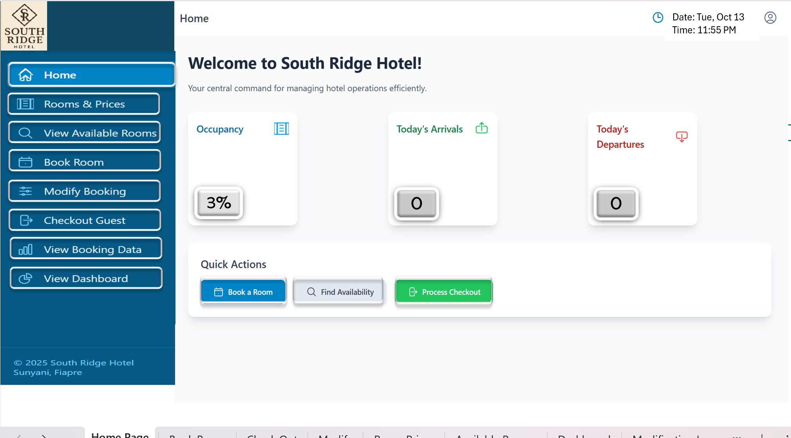
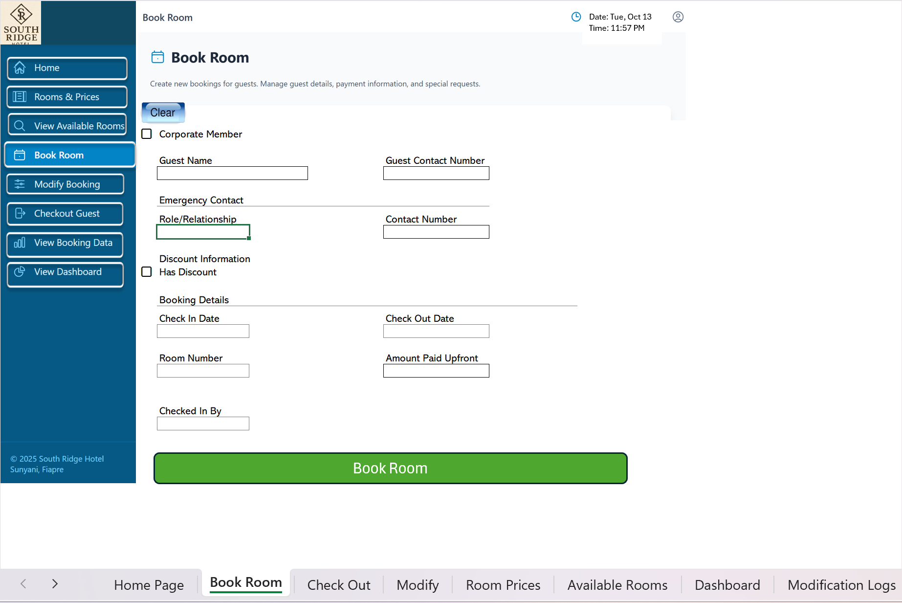
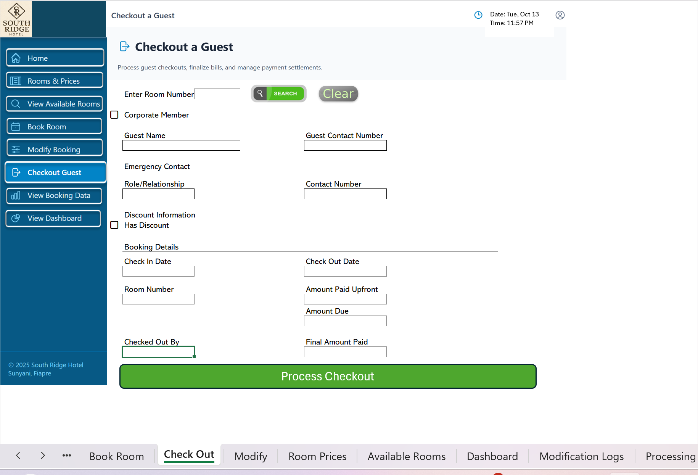
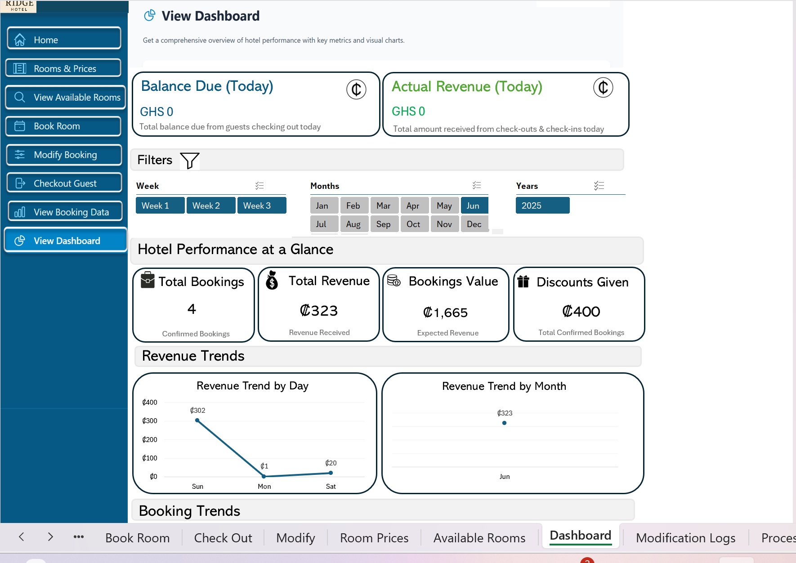

Builds / Hotel Booking System
The booking system that outgrew its spreadsheet
A full hotel operation — bookings, check-outs, pricing, availability and revenue — run through a system I built in Excel and VBA. It worked well enough that the client has now commissioned it as full software.
The problem
A hotel was running its front desk by hand: who’s in which room, who checks out today, what a change to a booking does to the bill. Manual booking records fail in predictable ways — double-booked rooms, silent price adjustments, and no trustworthy answer to how much did we actually make this month?
My role
All of it — delivered through my consultancy. I did the discovery with the client, designed the data model and the front-desk screens, wrote the VBA, and handed over a system their staff could run without me. The constraint was part of the brief: it had to work on the machine and software the hotel already had. That meant Excel — and Excel can carry a real operation if you treat it like a system instead of a spreadsheet.
What the design got right
- One database, many screens. Staff never touch raw data — they work in Book Room, Check Out and Modify screens, and VBA validates every entry before writing it to a single booking database. No orphan edits, no two versions of the truth.
- Changes leave a trail. Every modification lands in a log — because in a cash business, an edit nobody can trace is a hole money disappears through.
- Availability is computed, never typed. Available rooms derive from the booking data, so the board can’t disagree with reality.
- Management got a dashboard, not a data dump — bookings, discounts, expected amounts and revenue, with corporate bookings tracked separately from walk-ins.
What shipped
A working booking system the hotel ran its operation on: room booking and check-out, price management, computed availability, a modification log, and a management dashboard — all in one VBA-driven workbook. This is it, formula bar and all:




Impact
- Ran the operation — bookings, check-outs and revenue through one system
- Commissioned again — the client has asked for it as full software
- Zero new tooling — built on what the hotel already owned
What I learned
The best validation a system can get is the client asking for more of it. The Excel version proved the workflows, the counting rules and the dashboard — so the software version starts from a spec that has already survived contact with a real front desk. That’s the build happening next.